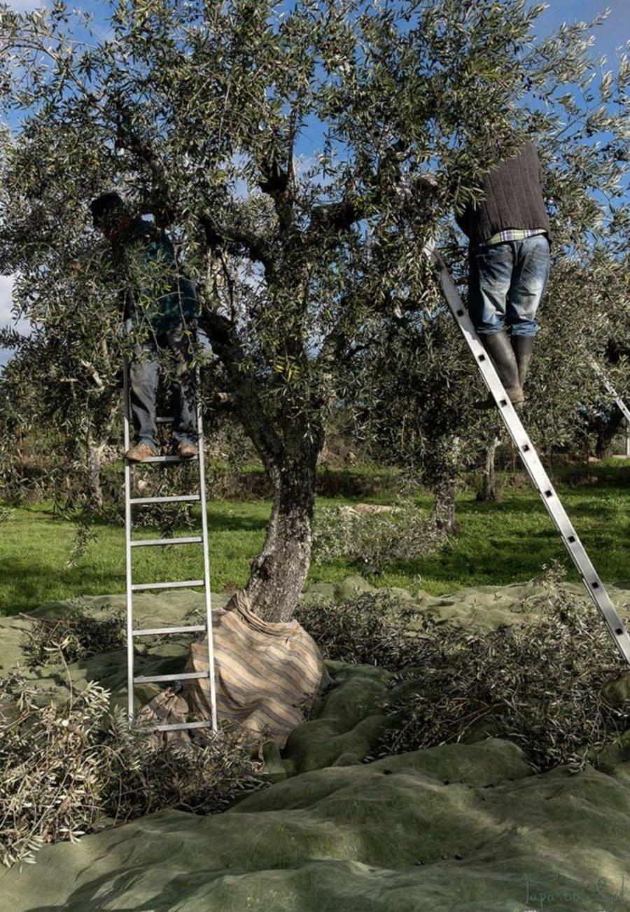
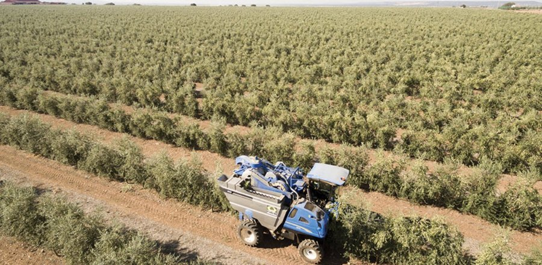

Do planalto transmontano às planícies do Alentejo: como o mesmo fruto dá origem a azeites — e a modelos de agricultura — completamente diferentes.
Durante décadas, Portugal dependeu de importações para ter azeite à mesa. Essa história mudou por completo: desde 2014, o país é autossuficiente em azeite, e a produção nacional atingiu cerca de 150 mil toneladas na campanha de 2019–2020 — um volume que transformou Portugal num exportador global, não já num importador.
Essa transformação tem uma geografia muito clara: fez-se sobretudo a Sul, no Alentejo. Mas a história do azeite português continua a escrever-se, também, nos moldes antigos do Norte — onde nasce o Zirbo.
Poucas culturas agrícolas ilustram tão bem o contraste entre o Portugal do interior norte e o Portugal do Sul como o olival.


O Alentejo, impulsionado pela água do Alqueva, passa hoje a área de olival tradicional em olival “moderno” a um ritmo notável — e concentra hoje entre 76% e 85% de toda a produção nacional de azeite.
É um modelo eficiente e, para muitos produtores, uma revolução económica genuína para o Baixo Alentejo. Também gera debate: associações ambientalistas têm alertado para o consumo de água e o impacto na biodiversidade da região; a associação de olivicultores do Sul contrapõe que o olival moderno está entre as culturas mais eficientes do perímetro do Alqueva em termos de água por hectare. É uma discussão em aberto, própria de qualquer transformação agrícola desta escala.
Portugal tem seis regiões de azeite certificadas com Denominação de Origem Protegida (DOP) pela União Europeia, cada uma com o seu próprio conjunto de variedades e carácter sensorial:
Portugal cultiva dezenas de variedades de azeitona, mas um pequeno grupo domina a paisagem:
A Galega é, de longe, a variedade mais espalhada pelo país — das Beiras ao Algarve — e a base dos azeites mais suaves e frutados de Portugal. Já a Cobrançosa, com maior presença no Norte, é responsável pelo amargor e picante que caracterizam azeites como o de Trás-os-Montes.
Face a este panorama, o Zirbo escolhe deliberadamente o lado do Norte: olival de sequeiro, em encosta, com variedades autóctones colhidas numa escala pequena e humana — o oposto do olival em sebe que hoje domina a produção nacional. Não é o modelo mais eficiente. É, para nós, o mais interessante.